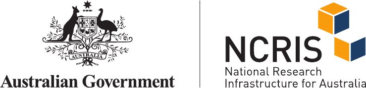
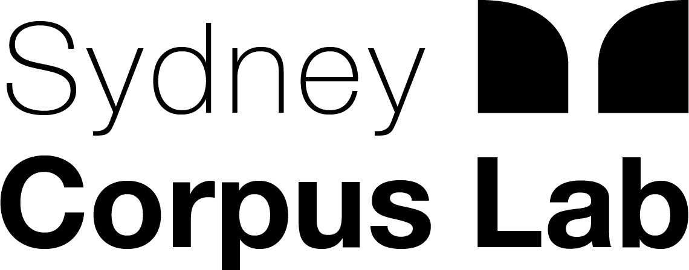
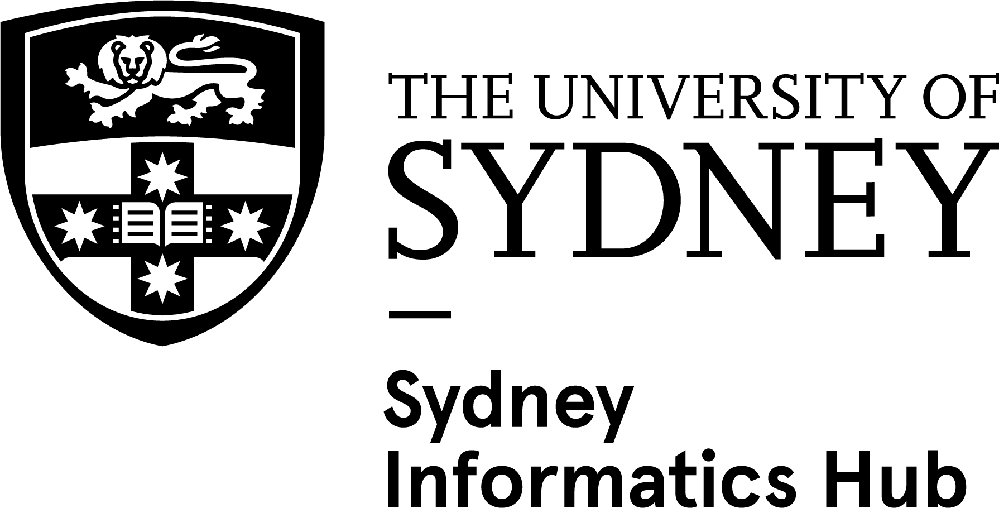

Sam Hames · RAPID-CDL, The University of Queensland
Wednesday 30 September 2026 · 9:15-10:45 am · Western Tower Boardroom, The Quadrangle
Hosted by the RAPID-CDL project and the Sydney Informatics Hub, co-hosted by the Sydney Corpus Lab and the Computational Social Science Lab, The University of Sydney



We acknowledge the Gadigal people of the Eora Nation, the Traditional Custodians of the land on which we meet today.
We pay our respects to Elders past and present, and extend that respect to any Aboriginal and Torres Strait Islander people here with us.
Out of the door, turn left and follow the corridor to the end. The male and all-gender accessible toilets are opposite the MacLaurin Hall kitchen; the female toilet is just around the corner to the right, by the stairs.
000 for police, fire or ambulance
02 9351 3333 for campus security (Protective Services), 24/7, or the SafeZone app
Would you need help to evacuate? Please let us know now, quietly.
| 9:15 | Getting started with the Proceedings of Federal Parliament: where the debates come from, and how to find the ones you need |
| 10:45 | Short break |
| 11:00 | Analysing parliamentary discourse at scale with Wordflow: thousands of debates at once, in a free point-and-click app. All welcome, even if you haven't registered. |
Staying for 11:00? Use the break to set up Wordflow: sih.tools/wordflow
Over to Sam.